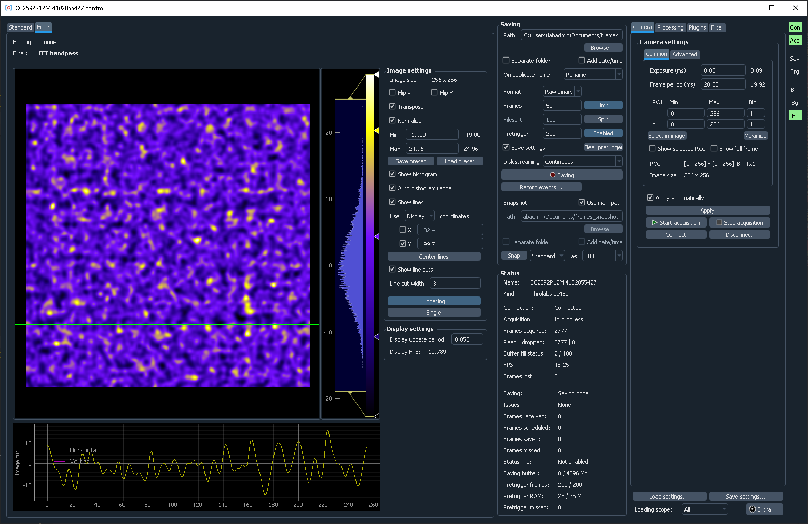

PyLabLib cam-control: Software for universal camera control and frames acquisition¶
PyLabLib cam-control aims to provide a convenient interface for controlling cameras and acquiring their data in a unified way.
Features:
- Communication with a variety of cameras: Andor, Hamamatsu, Thorlabs, IDS, PCO, Photometrics, Princeton Instruments, PhotonFocus with IMAQ and Silicon Software frame grabbers.
- Operating at high frame (100 kFPS) and data (1 Gb/s) rates.
- On-line data processing and analysis: binning, background subtraction, simple built-in image filters (Gaussian blur, Fourier filtering), playback slowdown for fast process analysis.
- Customization using user-defined filters (simple Python code operating on numpy arrays) or control from other software via a TCP/IP interface.
- Flexible data acquisition: pre-trigger buffering, initiating acquisition on timer, specific image property, or external software signals.
To install cam-control, download the latest version from GitHub as a self-contained Zip file and then follow further instructions for how to run it.